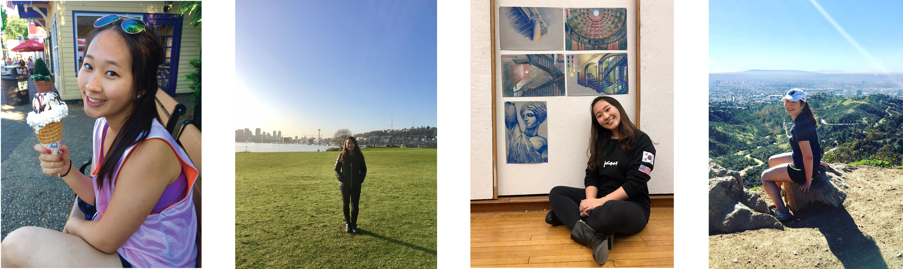

I am currently a freshman pursuing Bachelor of Architecture at Carnegie Mellon University. I am a strong believer in humanitarian architecture. Born in South Korea but raised in the US, my goal was always to find a balance between the two cultures I have grown up in. Likewise, my interest in architecture lies in the finding of balance in this fast-changing world, and to find a value that is both universal and transcendant. And I believe such a value found in humanitarian architecture - architecture that helps better the community and the lives of people. During free times I like to sleep, play piano or tennis, or draw, and I love to travel. Feel free to contact me if you have any questions. email: juyeonk@andrew.cmu.edu